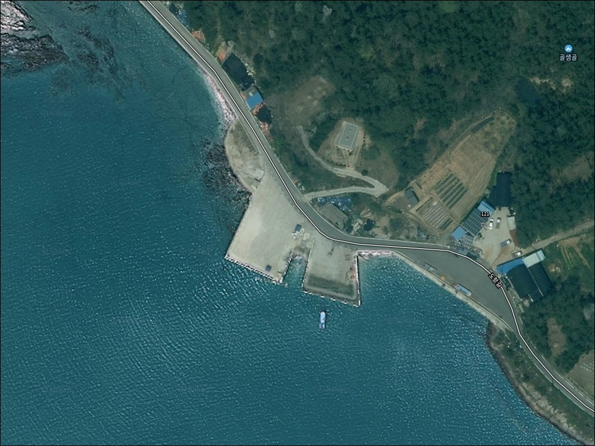
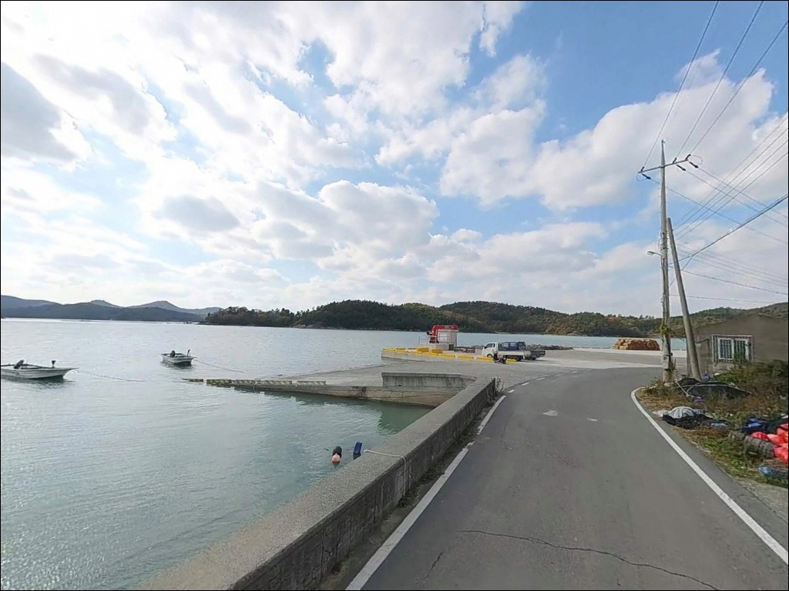
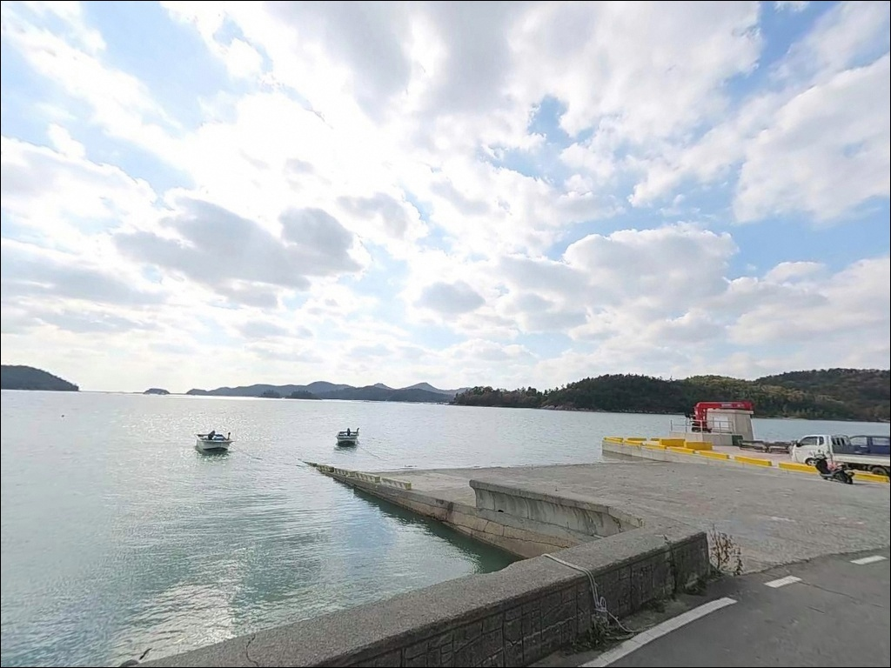
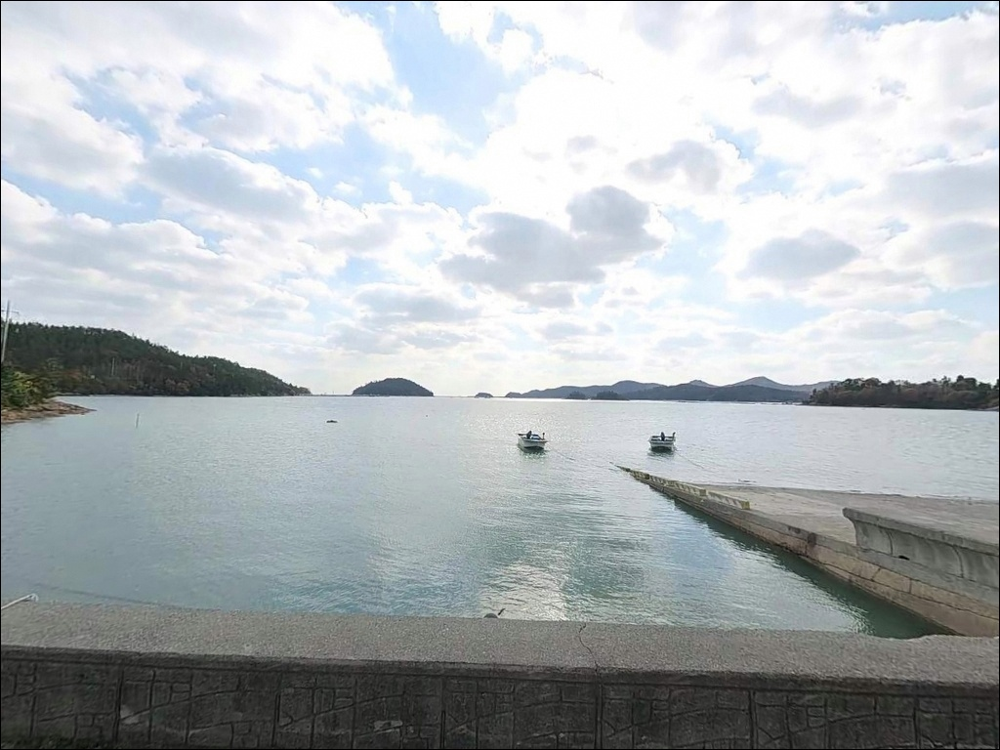
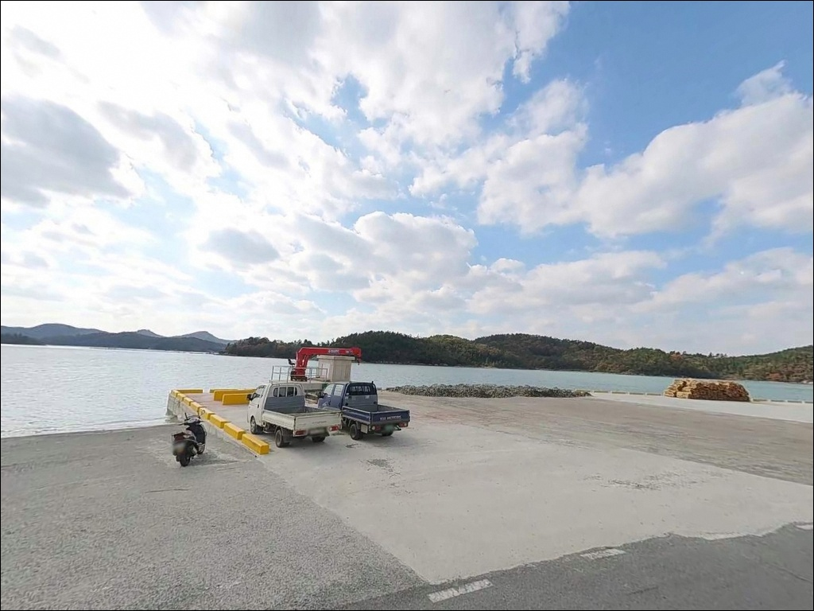
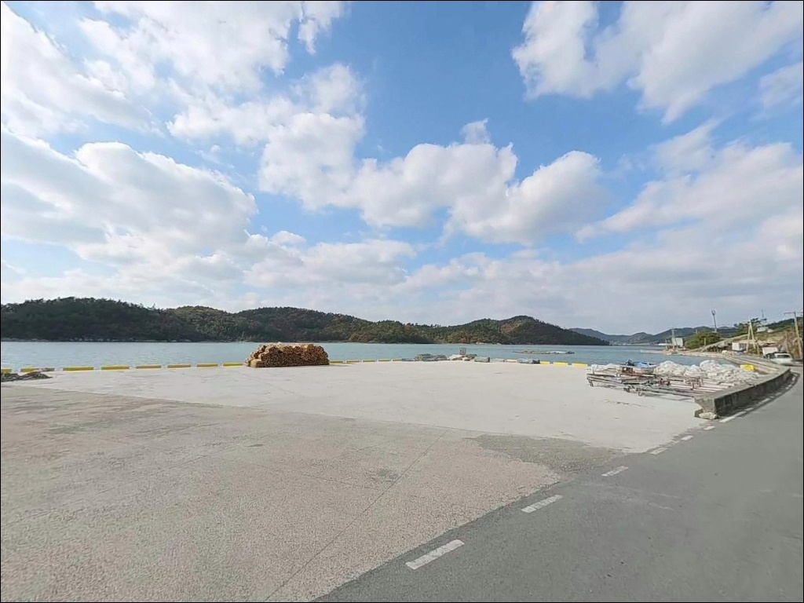
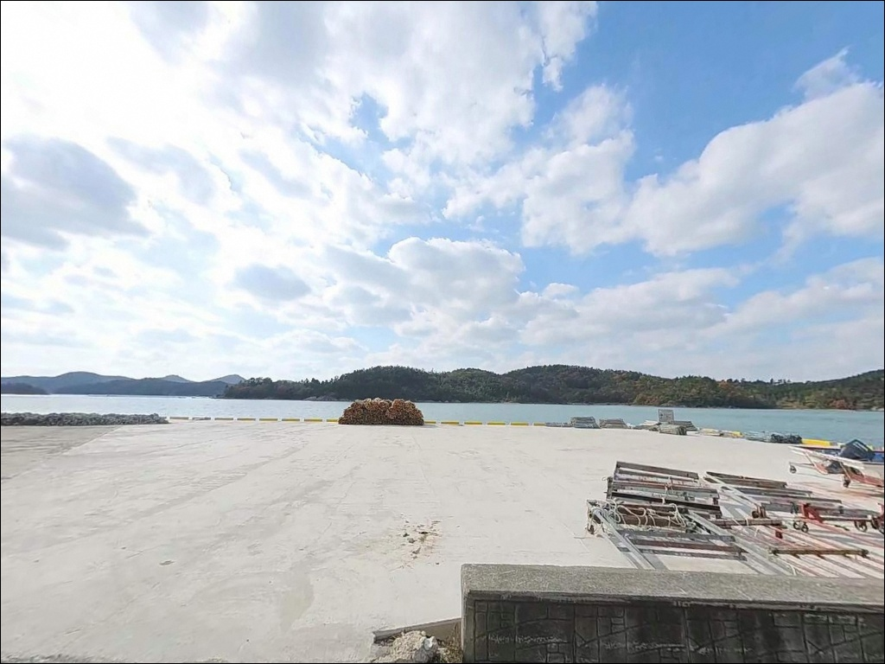
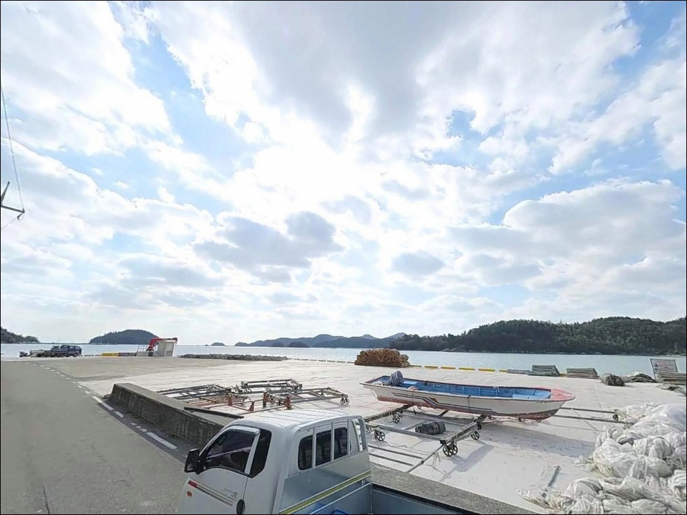
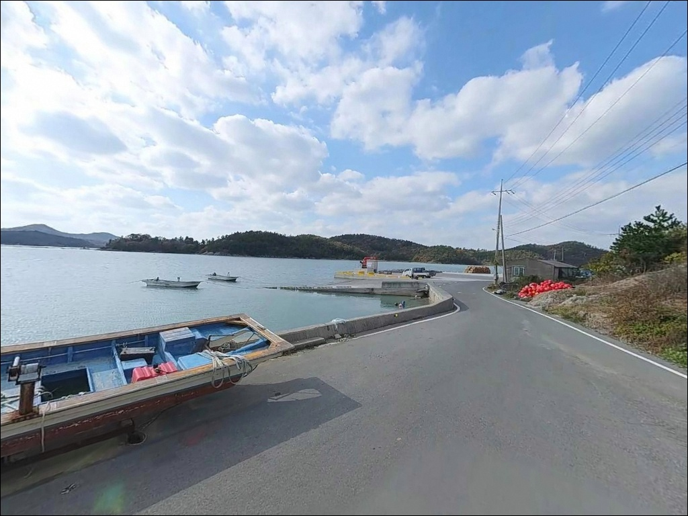

만길리 선착장, 진도 전남 진도군 잔잔한 물결과 어울리는 차박, 낚시 한적한 포인트
이 페이지에는 광고(제휴 링크 포함)가 있으며, 광고 링크를 통해 구매하면 운영자가 판매 수익 또는 수수료를 받을 수 있습니다. 포인트 사진: 카카오맵 스카이뷰·로드뷰. 이 페이지의 지도·사진 이미지는 카카오맵의 실제 서비스 이미지와 다를 수 있습니다.


포인트 안내
만길리 선착장
전남 진도군 의신면 만길리 22-4
간조 전후에 만길리 선착장에 도착하면
낚시 자리 대신 넓은 갯벌이 펼쳐집니다.
이 포인트는 내만 깊숙이 자리한 얕은 수심의 선착장으로,
물때를 확인하지 않은 방문은 허탕으로 이어지는 구조입니다.
이 글은 만길리 선착장의
지형 여건, 진입 환경, 물때 판단 기준,
낚시 스타일 적합성에 집중합니다.
조황 단정이나 특정 어종 보장은
이 글의 범위에 포함되지 않습니다.

1. 진입 동선과 포인트 접근성
만길리는 의신면 소재지(돈지리)에서
남쪽으로 이어지는 마을도로를 통해 접근하는 해안 마을입니다.
면사무소와 생활 인프라가 있는 돈지리와
같은 생활권에 속해 있어 방향 혼선은 크지 않지만,
선착장까지는 폭이 좁은 마을 안길이 포함된 구간이 있어
서행이 기본입니다.
대형 SUV나 캠핑 장비를 실은 차량이라면
출발 전 위성지도로 진입로와 회차 공간을 미리 확인하는 것이
현장에서의 진퇴 판단을 줄이는 방법입니다.
선착장 주변은 어선 하역과 공동작업 공간으로 쓰이는
콘크리트 공터가 일부 있는 구조로,
어선 이동 동선을 피해 주차하는 것이 기본 매너입니다.
소규모 마을 선착장 특성상 회차 공간이 여유롭지 않아,
입장 전에 차량 크기에 맞는 진입 가능 여부를
한 번 더 짚고 가는 편이 안전합니다.

2. 차박 환경과 야간 체류 여건
만길리는 조용한 어촌 마을과 소규모 펜션이 섞여 있는
차분한 해안 마을입니다.
야간에는 차량 왕래가 거의 없는 편이며,
선착장 쪽은 상업 시설과 거리가 있어
프라이버시 여건은 어느 정도 확보되는 구조입니다.
다만 펜션과 민가가 가까운 입지인 만큼
야간 소음과 강한 조명 사용은 주민 민원으로 이어질 수 있어
정숙 체류가 기본 원칙입니다.
가로등은 마을 도로와 선착장 주변에
생활 조명 수준으로만 설치된 구조여서,
야간 낚시 시 개인 헤드랜턴과 낚시용 조명은 필수입니다.
선착장 바로 옆 차박이 여의치 않다면
동일 해안선의 금갑해수욕장 주차장이
차박 플랜 B로 활용하기 좋은 대안입니다.


3. 주변 편의시설 및 인프라 현황
만길리 선착장 반경 3km 이내에서
즉시 이용 가능한 편의점이나 식당은 기대하기 어렵습니다.
의신면 소재지인 돈지리 방향으로 이동하면
진도농협 의신지점 하나로마트가 있어
식수, 음식, 연료 조달이 가능합니다.
출발 전에 식수, 얼음, 낚시 소품을 갖춰두는 것이
현실적인 준비 방식입니다.
응급 상황 발생 시 진도읍까지 거리가 상당하므로
비상약품과 구급 용품을 챙기는 편이 좋습니다.
출조 전 가장 가까운 응급 의료기관 위치를
직접 확인하고 출발하는 것도 기본 준비에 포함됩니다.

4. 방문 전 반드시 챙겨야 할 준비사항
만길리 선착장 방문 전에 가장 먼저 확인할 것은
물때입니다.
내만형 지형 특성상 간조 전후에는
갯벌이 드러나 낚시 자리 자체가 형성되지 않습니다.
바다타임에서 해당 지역 물때를 확인하고
초들물부터 중들물 사이 시간대에 맞춰 입장하는 것이
이 포인트를 제대로 활용하는 기본 조건입니다.
진도 해역은 기상 변화가 빠른 편이어서
당일 아침 기상청 해양 예보를 다시 한번 확인하는 것이
포인트 낭비를 막는 방법입니다.
선착장 구조상 전방 주차는 차량 추락 위험이 있으므로
주차 후 전방 여건을 확인하고,
야간 낚시 시에는 구명조끼를 반드시 착용합니다.
펄 저질 지형에서는 채비 손실이 생기는 경우가 있어
여분 채비를 넉넉하게 준비하는 편이 좋습니다.

5. 간조에 낚시 자리가 사라지는 이유 — 지형 분석
만길리 선착장이 속한 진도 의신면 남부 해역은
리아스식 해안이 발달한 내만 구조입니다.
만 안쪽으로 깊게 파고든 지형 특성상
수심이 완만하게 형성되며,
저질은 갯벌과 혼합 펄로 이루어진 구조입니다.
간조 전후에는 갯벌이 드러나 수심이 크게 낮아지는
전형적인 내만형 포인트 구조입니다.
이 지형에서 낚시 자리가 살아나는 시간대는
초들물이 시작되면서 수심이 확보되는 구간입니다.
진도 남동부 해역 조류는 외해에 비해 상대적으로 완만한 편이며,
만 입구에서 안쪽으로 이어지는 수로 방향이
원투 채비가 자리를 잡기 좋은 구간입니다.
선착장 끝단과 인근 수로 경계부는
수심 변화가 생기는 구간으로,
조류가 흐르기 시작하는 초들물 이후에
입질 가능성이 열리는 구조입니다.
이 일대 해역에서 기대해볼 수 있는 어종은
감성돔, 우럭, 노래미, 숭어, 붕장어 등
남해 내만 저서성 어종이 중심입니다.
계절별로는 봄과 가을에 감성돔 활성도가 높고,
우럭과 붕장어는 연중 탐색이 가능한 편입니다.
출조 전 진도 의신면 일대 최신 조황은
반드시 검색해 보시기 바랍니다.


6. 포인트에 어울리는 낚시 스타일
이 포인트에서 가장 무난하게 시작할 수 있는 방식은
원투낚시입니다.
펄 저질의 내만 지형에서는
채비를 수로 방향으로 멀리 던져 탐색하는 방식이 잘 맞고,
붕장어, 노래미, 도다리 등 바닥층 어종을
기대해볼 수 있는 조건입니다.
조류가 흐르기 시작하는 초들물 이후에는
릴찌낚시도 유효한 스타일입니다.
선착장 끝단 또는 수로 경계부를 따라
가벼운 찌 채비를 흘리는 방식으로
감성돔이나 숭어를 노려볼 수 있는 구간이 생깁니다.
조류 방향을 먼저 파악한 뒤 흘림 방향을 설정하는 것이
찌낚시 운용의 기본 순서입니다.
선착장 주변 구조물이나 여밭이 있는 구간이라면
소형 지그헤드 채비를 활용한 라이트 루어낚시로
우럭과 노래미를 탐색하는 방식도 곁들일 수 있습니다.
복수 방식으로 운용할 경우,
원투→찌낚시→라이트 루어 순서로 물때 흐름에 맞춰
전환하는 방식이 이 포인트에 적합합니다.

7. 대안 포인트와 플랜 B 동선
만길리 선착장이 여의치 않을 때
가장 현실적인 낚시 대안은
동일 해안선을 따라 접도 방향으로 이동하는 것입니다.
접도연육교를 건너면 수품항 서방파제에 닿습니다.
국가어항으로 등록된 포인트로,
방파제 규모가 크고 수심 7~8m 권의 안정적인 포인트 구조를
갖추고 있어 감성돔과 우럭이 주요 대상어로 거론됩니다.
도목마을 방파제도 만길리에서 가까운 거리에 있는
소규모 방파제 포인트입니다.
조황이 살아 있는 날이라면
두 포인트를 묶어서 탐색하는 동선이 효율적입니다.
차박 위주로 방문할 경우
금갑해수욕장이 1순위 대안입니다.
주차장과 화장실을 갖춘 해변으로,
바다낚시와 차박을 동시에 운용하기 좋은 구조입니다.
진도 신비의 바닷길 인근 가계해수욕장 일대도
편의시설을 갖춘 차박 대안으로 함께 고려할 수 있습니다.

물때를 알고 가면
만길리 선착장이 달라집니다
원투낚시나 릴찌낚시를 즐기는 낚시인 중
조용한 내만 포인트를 찾는다면
만길리 선착장은 그 조건을 갖춘 곳입니다.
온라인 정보가 많지 않아
직접 발품을 팔아야 하는 탐색형 포인트이며,
물때를 맞추고 진입 여건을 사전에 확인한 낚시인에게
조용하고 한적한 출조가 될 수 있는 곳입니다.
반면 편의시설을 기대하거나
조황이 검증된 포인트를 원한다면
수품항 방파제를 기점으로 삼고
만길리를 병행 탐색하는 동선이 더 효율적입니다.
물때 확인, 자급 준비, 진입로 사전 점검,
이 세 가지를 갖추고 간다면
진도 내만에서 조용하게 낚싯대를 펼칠 수 있는 포인트입니다.
낚시 후 차박으로 이어지는 하룻밤 일정이라면
금갑해수욕장이나 수품항 인근 주차 공간과
함께 묶어서 계획하는 편이 여유롭습니다.